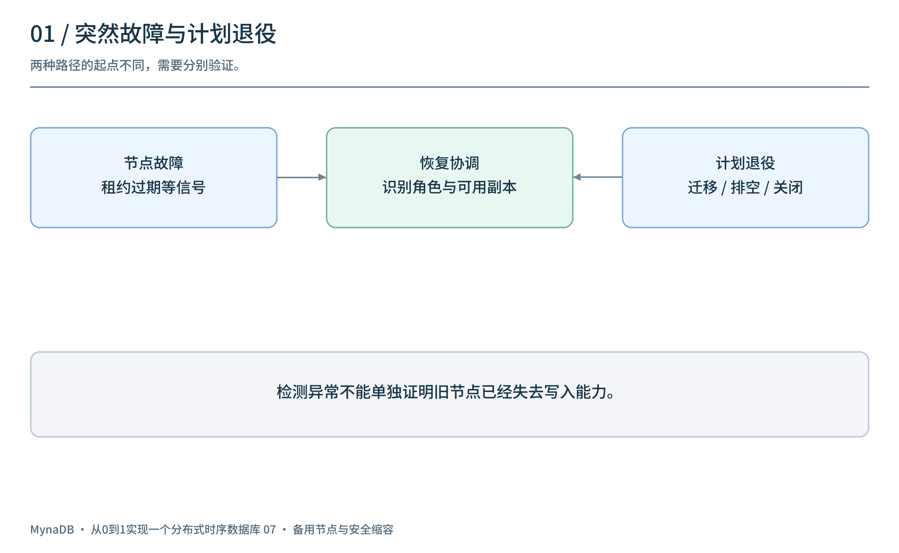
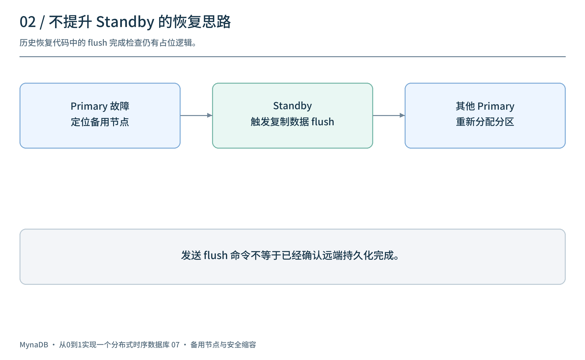
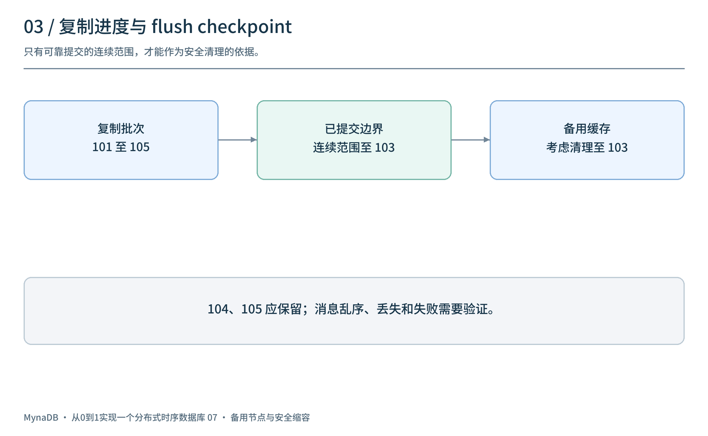
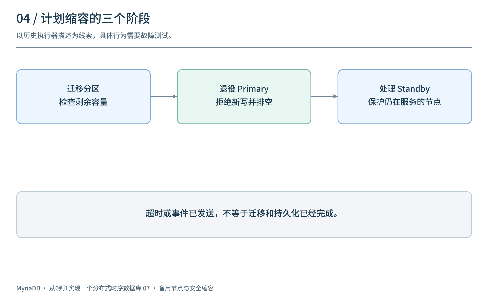
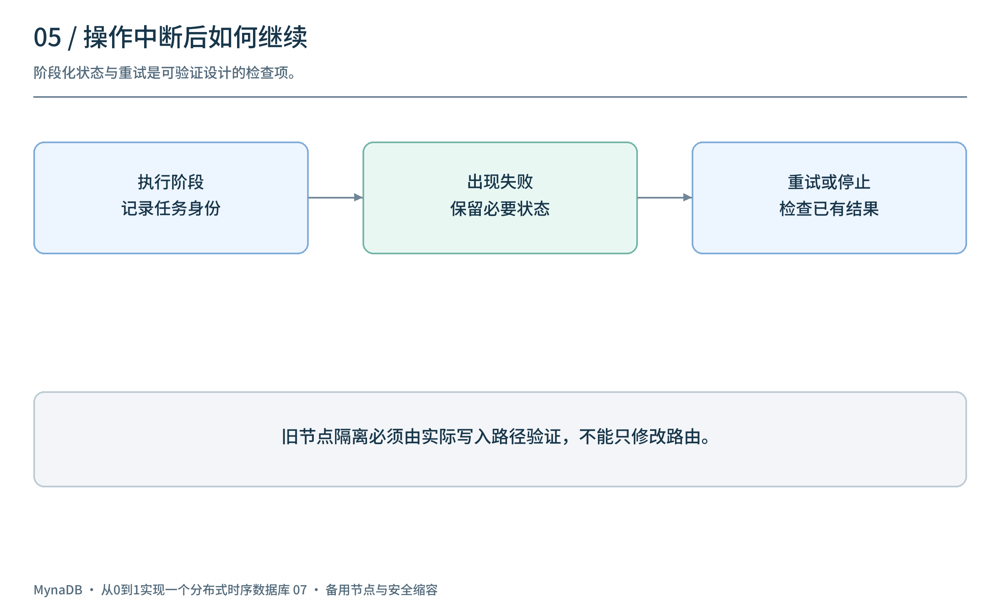
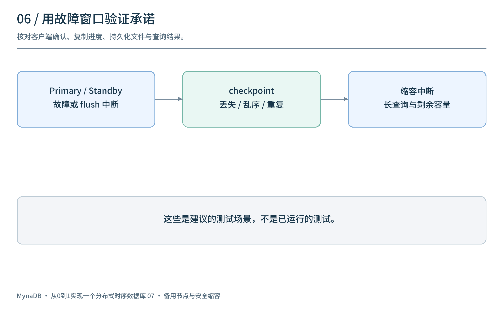

社区文章草稿 · 备用节点与安全缩容 · 本地预览，尚未对外发表
从0到1实现一个分布式时序数据库（七）：不提升 Standby 的恢复与安全缩容
上一篇将系统拆成 Router、Data 和 Meta。节点运行时，写入会进入 Primary 的内存和存储路径，也可能复制到 Standby；但当一台节点突然退出，或者运维主动减少节点时，数据与请求该如何交接？
这一篇以 v0.6.0 / M7 为线索，讨论不将 Standby 提升为 Primary的恢复设计，以及节点退役和缩容中的边界。流程图用于解释设计；具体历史实现仍有占位和限制，不代表已经验证无损恢复。
1. 两种情况：突然故障与计划退役
计划退役可以提前停止接收新任务、等待在途请求和处理内存数据；故障则可能发生在任意时刻，系统只能根据最后可靠保存的信息恢复。

| 情况 |
触发方式 |
关键问题 |
| Primary 故障 |
租约过期等信号触发恢复流程 |
Standby 实际收到哪些数据？分区如何重新分配？ |
| Standby 故障 |
检测到备用节点不可用 |
哪些 Primary 不再受到备用节点保护？ |
| 计划缩容 |
管理操作发起节点退役 |
如何迁移职责、排空内存并处理在途请求？ |
心跳或租约过期仍只是协调系统中的状态依据；要防止旧节点恢复后继续接受不该接受的写入，还需要完整的授权和隔离机制。
2. 不提升 Standby：保留角色，重新分配工作
早期常见的思路是把备用节点提升为新主。M7 的设计转向另一条路径：Primary 故障后，协调器找到为其保存复制数据的 Standby，触发相关数据 flush，再将分区分配给其他仍可用的 Primary。Standby 本身不因此改变为 Primary。

Primary A 故障 → 找到 Standby S → 触发 S 处理 A 的复制数据
↓
分区重新分配给其他 Primary
这种分工让“谁保存备用数据”和“谁继续承担主写入职责”成为两个独立问题。它同样需要回答：备用数据是否完整？flush 的文件何时可见？旧 Primary 的写入权何时失效？没有其他 Primary 或 Standby 不可用时如何报告失败？
历史实现的重要限制： v0.6.0 的恢复管理器发出 Standby flush 命令后，完成等待处仍是短暂等待并假定完成，源码标有后续实现状态跟踪的 TODO。因此不能说该标签已经严格确认了 flush 完成，更不能据此承诺无损切换。
3. Flush checkpoint：备用缓存何时可以清理？
Standby 接收复制批次后，如果 Primary 已经将对应数据可靠写入持久化存储，备用缓存就不需要无限增长。一个思路是由 Primary 在成功 flush 后发送 checkpoint，告诉 Standby 某个连续序号范围已经完成。

例如：
已复制：101 102 103 104 105
确认已 flush 的连续边界：103
可考虑清理：≤ 103；保留：104、105
v0.6.0 定义了 FlushCheckpoint，包含来源节点、可选分区和 flushed_seq 等信息。安全清理还要验证：checkpoint 是否对应实际成功提交的数据、分区与任期是否正确、重复和乱序消息如何处理，以及恢复流程是否仍依赖这些缓存。收到一个较大数字本身不能证明之前所有数据都已持久化。
图中的“连续提交边界”是安全设计要求，不能直接推断历史标签已覆盖所有竞争和失败窗口。异步复制下，Primary 确认给客户端但尚未到达 Standby 的数据，也不能靠备用缓存凭空恢复。
4. 计划缩容：先迁移，再退役
缩容不应等同于直接停止一个进程。一个需要验证的流程是：检查目标和剩余容量，迁移或重新分配职责，让退役节点拒绝新的写入，处理已有内存数据和在途查询，最后完成注销与关闭。

v0.6.0 的缩容执行器描述了三个阶段：迁移分区 → 退役已清空的 Primary → 退役不再需要的 Standby。执行前和执行过程中还需要检查备用节点等安全条件。节点侧代码包含退役标志、内存数据和在途查询数量的检查。
在这个过程中必须区分“开始退役”和“安全完成”：
- 新请求是否已经路由到其他节点，旧节点是否拒绝不再拥有权限的写入？
- 仍在执行的查询如何完成、取消或重试？
- flush 失败或超时后，能否继续删除节点元数据？
- 退役过程重试是否会重复迁移、遗漏分区或过早清理副本？
这些是检查流程闭环所需的问题，不是对历史代码所有路径的正确性认证。超时不应被自动解释为数据已经安全迁移。
5. 出错时先保护状态，再决定是否继续
恢复和缩容不是一串永远成功的步骤。对象存储写入失败、Standby 失联、Meta 状态变化或进程重启，都可能让任务停在中间。

一种可验证的操作设计应记录阶段和任务身份；每次重试先检查已有结果，再根据条件决定继续、停止或人工介入。对外报告应区分“请求已提交”“操作仍在执行”“验证完成”和“失败”，不能把事件已经发送当成远端工作已经完成。
如果涉及旧节点隔离，租约、任期或 fencing 必须在实际写入路径上被验证；仅修改路由缓存或节点状态，并不能阻止仍可访问存储的旧进程写入。这些是系统设计要求，而非本文对该版本实现作出的保证。
6. 如何验证恢复与缩容？

| 故障窗口 |
建议检查 |
| Primary 确认写入后立即退出 |
核对确认策略、Standby 实际收到的序号及可能损失 |
| Standby flush 请求发出后中断 |
是否真正完成；重复请求和重启后如何恢复 |
| checkpoint 丢失、重复或乱序 |
是否错误清理尚未持久化的数据 |
| 分区迁移中旧节点仍在服务 |
路由、授权和重复写入如何处理 |
| 退役时存在长查询 |
是否等待、取消或重试，结果是否完整 |
| 剩余 Primary 或备用节点不足 |
是否停止操作并清晰报告未受保护状态 |
测试中为写入设置稳定标识，记录客户端确认、节点状态、复制进度、文件及查询结果。进程终止、网络分区和存储失败应分别覆盖。上述表格是建议的验证计划，不是已经运行的结果。
7. 回看这一阶段
M7 将重点从“能否组建集群”转向“节点消失或退役时如何继续”：Standby 保留复制数据、恢复协调器重新分配工作、缩容流程尝试有序排空。不提升 Standby 并不会自动带来无损或安全切换；这些承诺仍取决于复制确认、flush 完成、授权隔离与故障验证。
下一篇进入 v0.7.0：当表和物理分区分布在不同节点上，如何分别维护表所有权与查询路由。
项目源码：panbooks/mynadb · v0.6.0 源码 · 中文文档。